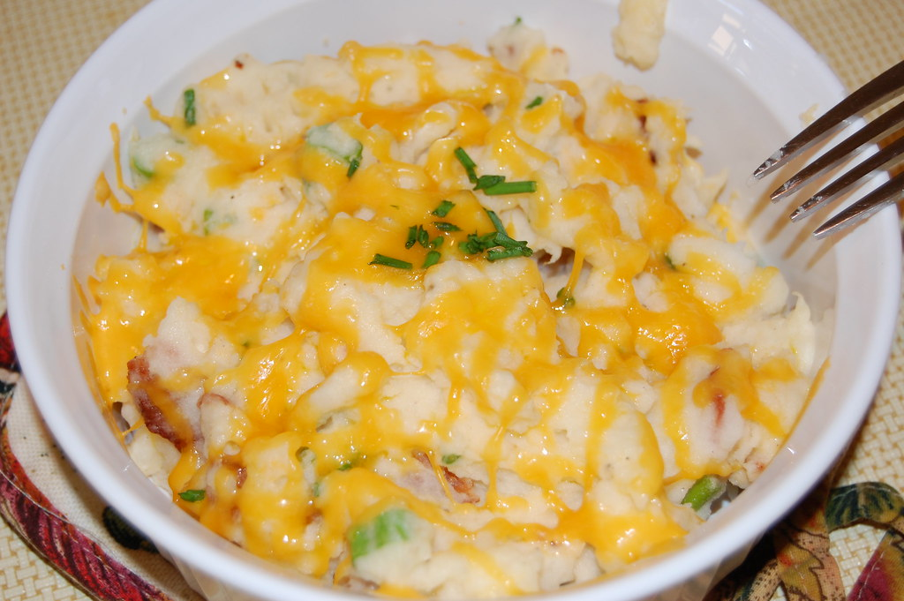

Mashed Potatoes

"Mashed Potatoes" by Stefano A is licensed under CC BY 2.0 
 .
.
Description
Mashed potatoes are an easy, tasty, and affordable side, but gummy, gloopy tots are no bueno. This recipe uses russet potatoes and a ricer or food mill to keep things fluffy, light, and delicious.
Ingredients
- 2lbs russet potatoes, peeled, in 2-inch cubes
- 1/2 cup whole milk, plus more as needed
- 6tbsp unsalted butter, room temperature, in 1/2 inch pats
- Kosher salt
- Black pepper
Steps
- Rinse potatoes in a pot of cold water 2 to 3 times until it runs clear. Cover potatoes in fresh cold water and season with salt.
- Bring potatoes to a boil. Reduce heat to a simmer and cook until potatoes are tender.
- Drain potatoes and rinse with hot water for 30 seconds. Let sit 1 minute.
- Run potatoes through a ricer or food mill back into the pot.
- Fold butter into potatoes. Mound potatoes into the center of the pot and add milk. Bring milk to simmer on med-hi heat and gently fold it into potatoes. Fold more milk in until the potatoes reach desired consistency. Season and serve.
Return to the main page